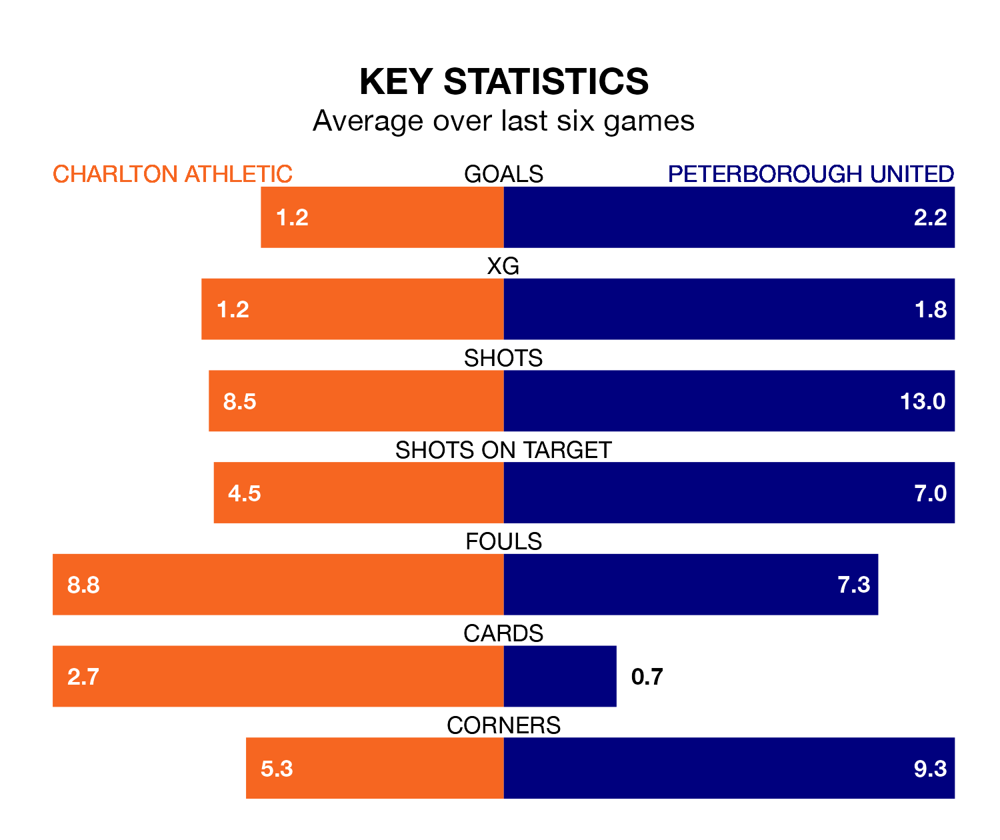

Peterborough United face Charlton Athletic on Saturday seeking to protect their formidable unbeaten run in EFL League One.
The Posh are unbeaten in nine, with six wins and three draws, ahead of the 3pm kick-off.
They face a Charlton team who have won one and drawn five over the same number of games.
With 50 goals in 25 games so far this season, Peterborough are the league's highest scorers with 2.0 goals per game. And they are conceding fewer than average, letting in 27 goals at a rate of 1.1 per game.
Charlton are also above average scorers, with 1.6 goals per game, compared to a league average of 1.3. They have conceded 1.5 goals per game.
In Alfie May, Athletic have the league's most on-form striker so far this season. He has notched 15 goals in 22 appearances.
United's top scorers, with eight goals in 24 games each, are Kwame Poku and Ephron Mason-Clark.
In the last 10 years, Charlton and Peterborough have played each other on 12 occasions. Charlton won one of them, Peterborough seven, and they drew four times.
On average, the Addicks scored 0.8 goals and the Posh 1.4 in those matches.
Their last meeting was on August 12, when Peterborough won 1-0 at home.
The Posh are fourth in the table after 25 games, of which they have won 14 and drawn seven, earning 49 points.
The Addicks are 10 places behind the away team in 14th, with seven wins and nine draws putting them on 30 points.
Charlton's last match was on January 6, a 3-3 draw against Port Vale, with Corey Taylor, Daniel Kanu and Tyreece Campbell getting the goals for the Addicks.
Peterborough beat Derby County 3-2 last time out, on January 1, with Harrison Burrows, Poku and Ricky Jade-Jones on the scoresheet.
Updated: 13:38 (UTC), 10/01/24